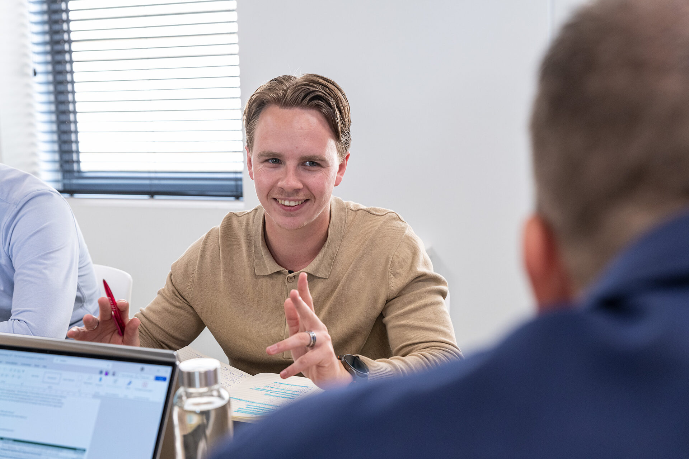
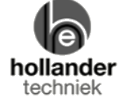
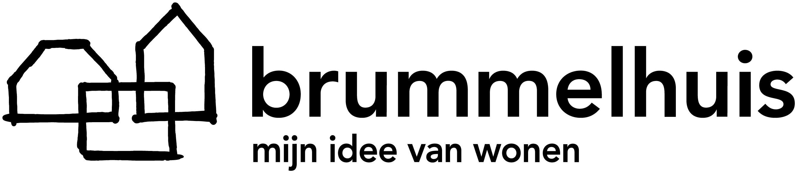
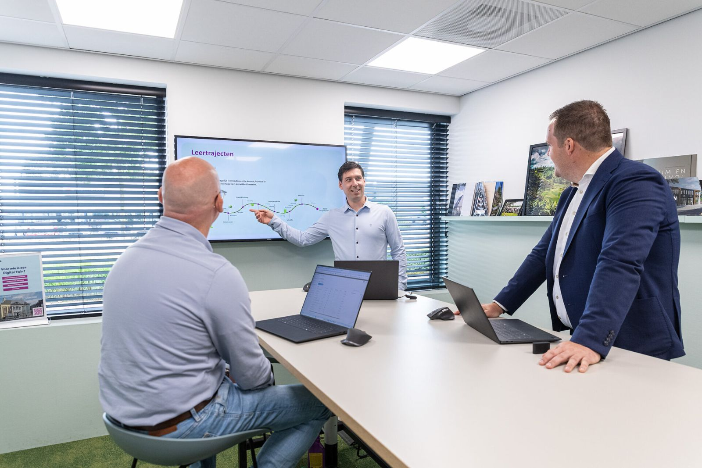

Technologie verandert de bouw. Mensen maken het verschil.
Wij helpen organisaties in bouw, installatie en vastgoed richting te geven aan digitalisering en AI, verandering werkend te krijgen en mensen te ontwikkelen voor het werk van morgen.
Hoe digitaal fit is jouw organisatie?Doe de zelfscan →Wat betekent AI voor jouw organisatie? →Adviseurs, trainers en onderwijskundigen uit de bouw zelf
Sinds 2013 helpen we organisaties in bouw, installatie, toelevering en onderwijs toekomstbestendig te worden, van familiebedrijf tot landelijke installateur. Vanuit Rijssen, voor heel Nederland.


Onze aanpak
Waar moet de organisatie naartoe, hoe krijgen we verandering werkend, en wat moeten mensen kunnen én blijven kunnen? Drie onderdelen waar je los bij kunt instappen, of samen, in een doorlopende samenwerking.
 AI in bouw, installatie en vastgoedBegin niet met AI. Begin met wat je organisatie wil bereiken.Vaak begint het met een vraag over Revit of Solibri. Daarachter zit meestal een proces- of organisatievraag. Wij helpen met AI vanuit data, technologie, processen, sectorkennis en de mensen die ermee moeten werken.
Data en technologieEigen data, veilige toepassing, koppeling met BIM en systemen.
Proces en organisatieWaar AI werk overneemt, wat verandert in functies en afspraken.
Mens: human in the loopOordeel, samenwerking en communicatie worden belangrijker, niet minder.
Lees onze aanpak voor AI →
AI in bouw, installatie en vastgoedBegin niet met AI. Begin met wat je organisatie wil bereiken.Vaak begint het met een vraag over Revit of Solibri. Daarachter zit meestal een proces- of organisatievraag. Wij helpen met AI vanuit data, technologie, processen, sectorkennis en de mensen die ermee moeten werken.
Data en technologieEigen data, veilige toepassing, koppeling met BIM en systemen.
Proces en organisatieWaar AI werk overneemt, wat verandert in functies en afspraken.
Mens: human in the loopOordeel, samenwerking en communicatie worden belangrijker, niet minder.
Lees onze aanpak voor AI →
Bekijk ons opleidingsaanbod
De techniek wacht niet. Je mensen wel, als je ze niet meeneemt.
Software en AI veranderen elk jaar. Wat blijft, is de organisatie die kennis borgt, overdraagt en snel kan bijsturen. Daar begin je liever dit kwartaal mee dan volgend jaar.

Meer dan dezelfde training op jouw kantoor
Een bestaande opleiding voor je team is een goed begin. Vaak hoort daar meer bij: een leerpad per functie, een blended traject of een leerprogramma dat structureel met je organisatie meegroeit. Meestal volgt het op de strategie en de verandering die al loopt.
Iets om over na te denken
Alle artikelen AI & productiviteitPraktische AI in de bouw: wat werkt vandaag al, en wat nog nietGeen visie op 2030, maar wat je deze maand kunt inzetten in werkvoorbereiding, calculatie en projectleiding.
AI & productiviteitPraktische AI in de bouw: wat werkt vandaag al, en wat nog nietGeen visie op 2030, maar wat je deze maand kunt inzetten in werkvoorbereiding, calculatie en projectleiding.
 Mens & veranderingHuman in the loop: waarom adoptie belangrijker is dan technologieDigitaliseringstrajecten mislukken niet op software, maar op mensen die er niet mee gaan werken.
Mens & veranderingHuman in the loop: waarom adoptie belangrijker is dan technologieDigitaliseringstrajecten mislukken niet op software, maar op mensen die er niet mee gaan werken.

Leren & organisatieVan skills gap naar leercultuur: zo bouw je een lerende organisatieEen training lost een tekort op. Een leercultuur voorkomt het volgende.Wat betekent dit voor jouw organisatie?
Leg het gewoon aan ons voor. Bel, mail of WhatsApp: je krijgt iemand uit het team die de inhoud kent, dezelfde werkdag.
We reageren dezelfde werkdag. Liever eerst zelf kijken? Doe de zelfscan.